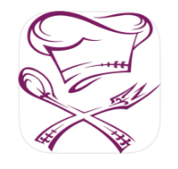
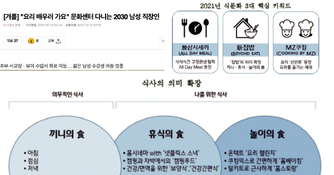
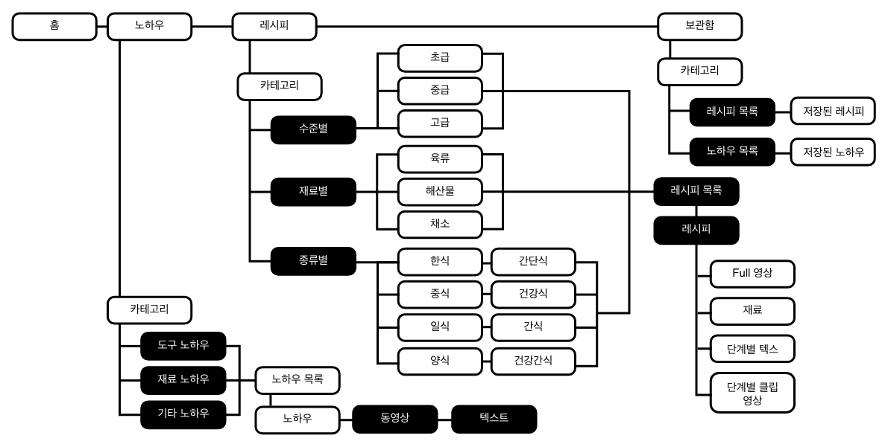
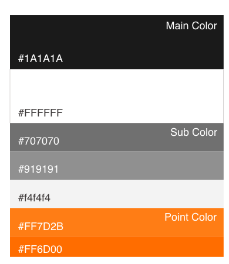
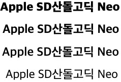
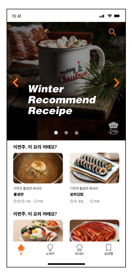
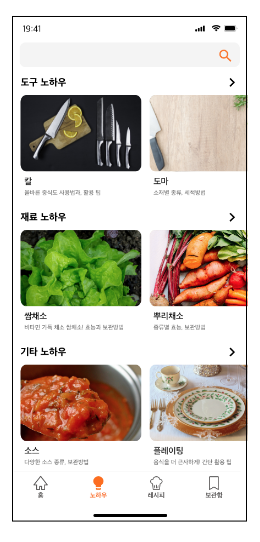
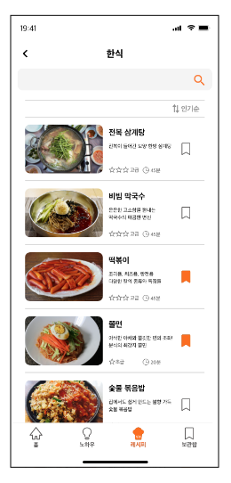
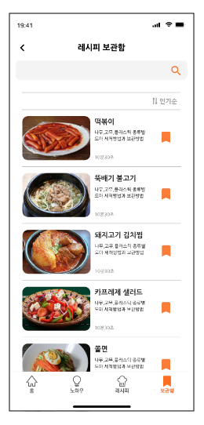

Research
Problems

요리 : 기술 및 레시피
주요 콘텐츠가 텍스트로 구성되어있어, 높은 가시성을 요하는 어플임에도
불필요한 모션, 텍스트 사이즈, 레이아웃 등 비전문적인 디자인으로 인한
비가시성 문제가 많다고 보여 선정하였다.
요리 : 기술 및 레시피
주요 콘텐츠가 텍스트로 구성되어있어, 높은 가시성을 요하는 어플임에도
불필요한 모션, 텍스트 사이즈, 레이아웃 등 비전문적인 디자인으로 인한
비가시성 문제가 많다고 보여 선정하였다.
My Role
- 1) 경쟁 앱 분석 : 앱 리서치 및 장단점 분석
- 2) '요리 : 기술 및 레시피' 장단점 분석
- 3) 타겟층 분석 : 기사 자료, 그래프 리서치
- 4) 페르소나 선정 : 앱에 맞는 최적화된 페르소나 선정
- 5) UX Vision 설정 : 개인 의견 제시
- 6) UX flow 설정 : 리디자인 및 프로토타입 제작
어플의 단점
- 1) 어플 네이밍의 임펙트 부족
- 2) 카테고리 분류의 부재로 인한 불편함
- 3) 레시피, 기술 컨텐츠의 비가시성
- 4) 레시피 컨텐츠의 내용 부족
- 5) 불필요한 모션
어플의 개선방향
홈
불필요한 텍스트 내용.
텍스트보다 배경이 더 눈에 띔
!">
불필요한 텍스트는 지우고, 어플의 기능을 이해하고, 사용자가 쉽게 첫 화면 전체에 카테고리 홈 추가
기술
카테고리의 모션이 방해. 카테고리에 이름이 없어 원하는 기술방법을 찾을 수 없음
2">
검색창 추가.카테고리 네이밍은 사용자가 이해하기 쉽게 노하우로 변경.
목록 레이아웃 수정
레시피
레시피를 찾기 어려움.
내용 레이아웃이 보기에 불편.
구체적인 설명이 부족
3">
검색창 추가. 카테고리 네이밍, 목록 에이아웃 수정.
사용자가 이해하기 쉽도록 영상과 영상 타임코드 추가
보관함
카테고리의 모션이 방해.
카테고리에 이름이없어 원하는기술 & 레시피를 찾을 수 없음
4">
레시피 카테고리 목록에 보관함 저장 아이콘 추가.
전체 레이아웃 변경
사용자층 분석
자료를 통해 남성과 여성 3-50대의 레시피 어플 사용률이 가장 높음을 알 수 있다.
또한, 최근 코로나 판데믹의 영향으로 집에있는 시간이 늘어나며 자연스레 MZ세대의 요리에 대한 관심이 증가하고 있음을 알 수 있었으며, 남성의 사회적 인식 변화로 인한 요리 관심이 계속하여 증가하고 있다는 사실을 확인하였다.

UX Goal
요리 레시피와 요리하는데에 필요한 기술 정보 제공
요리 기술/레시피 정보제공 & 나만의 레시피 기록
Persona
김준영 (35세)
-
직업
건축사
-
월급
400만원대
-
성격
사교적이고 활발한 성격.
새로운 도전을 좋아함.
깔끔한 성격으로 어지르는 것을 싫어함. -
주거형태
회사사택
-
가구원수
1인가구
-
숙련도
기기 숙련도 - 중상
요리 스킬 - 중 (음식 유투브를 즐겨본다) -
니즈
아침에도 간단한 음식을 차려먹고자 함.
다양한 레시피를 배우고 싶어함.
도구 사용 방법 tip을 배우고 싶어함. -
최종목표
만들 수 있는 레시피의 스펙트럼을 넓히고
싶으며, 동료들에게 요리를 해주고 싶다.
Informaition Architexture

Design
- Keyword
- #Simple #Visillity #Joy #Delicious
- color
- 
- Font
- 
Protorype

홈

노하우

레시피

보관함
Review
Team Project
- 장점
- 1) 각자의 파트를 맡아 업무 수행
- 2) 각자의 피드백을 통해 의견 조율
- 3) 팀원 한 명씩 찾은 정보를 취합하였기 떄문에 여러 정보를 얻기 쉬웠음
- 단점
- 1) 코로나 시기로 인하여 직접 다면하기 어려워 자세한 정보 공유의 불편함
- 2) 각자의 파트를 수행 할 때 시간차가 날 경우가 종종 있었음
Review
UI 디자인을 하면서 XD를 처음 사용하게 되었는데, 팀 협업을 하다보니 혼자 하는것보다 여러가지 사용 해 볼 것이 많아 숙련도가 더 올라가게 되었다.
팀 작업을 하면서 팀원들의 의견을 맞춰가며 각 개인의 역할분담이 중요했다. 누구 한명의 의견이라도 경청 해 주는것이 팀 작업의 핵심이었다. 맞춰가는 부분에서 시간과 노력이 드는걸 꺠닫게 해주는 프로젝트였다.